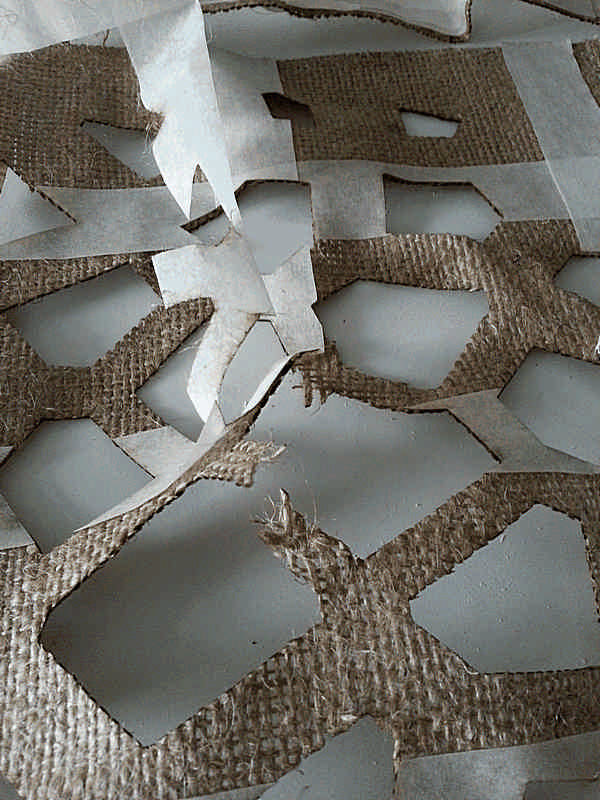
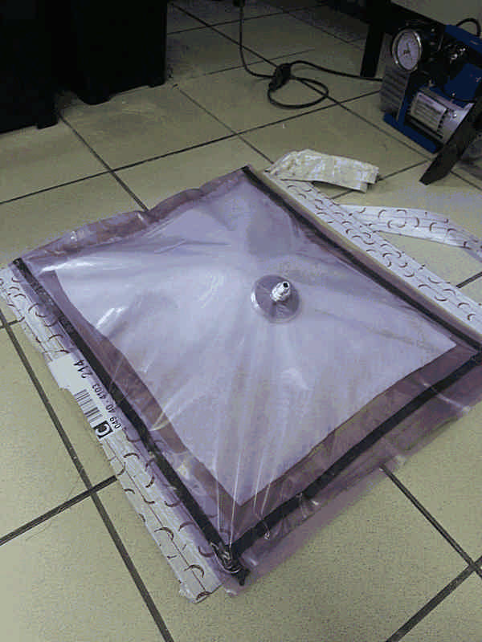
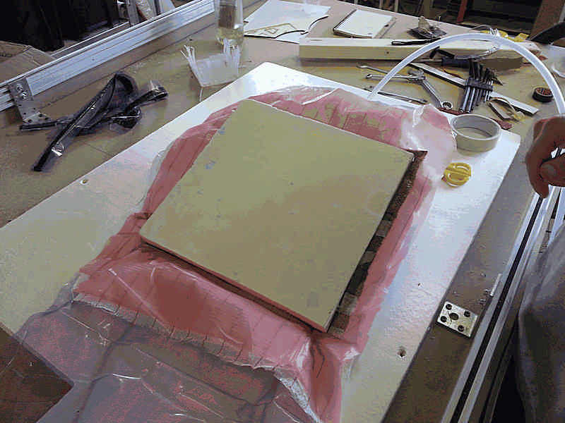

David Montenegro
FAB ACADEMY 2015
Final Project | Assignments | Download | About | Contact
04_22 Composites
On wednesday 04.22.2015 we’ve got the twelveth online lesson with Neil Gershenfeld.
The next lessons can be found on the Fab Academy account on Vimeo.
For this week the assignment was
** design and make a 3D mold (~ft2), and produce a fiber composite part in it **
NOTE
This week I run into this video about George Powell, one of the very few skateboard builders in the world today who still manufactures his products in America under one roof just as he has always done.
This is a documentary, not just a reel, so the contribute of the author leave his mark.
Nonetheless through this video we can see how much difficult is to accomplish a fulfilling result, how much care we have to put into the process, even for something not so complex as a skateboard.
Design matters, shape matters, material matters, every detail matters.
In some artifacts, like skates, the whole design ha passed through a sort of natural selection, a development process that through a huge amount of mistakes has finally found its best shapes. At the same time it leaves a wide range of easy customizations, both aesthetic and mechanical: each of them brings an important personal value, making just a skateboard “your skate”.
It’s just a thought about skates, customization, design sedimentation, research, personal values we tend to apply to objects, and so I’ve written this note. It may be longer and deeper, but this wouldn’t be the right place to publish this content, so just step into this week assignment.
Materials
For this assignment we must use A 30X30cm burlap patch and natural resins.
To make to mold I’ve used an high densiti polyurethane foam.
Step1: Design
I used Rhinoceros to design the mold and Grasshopper to design an organic pattern to cut onto the surface.
Step2: Lasercutting
Than I lasercutted the pattern on the burlap.
Due to the nature of the holes I can’t make them after the curing.
To keep the fiber in place after the cutting I used some papertape (with this holes it’s important to support the fiber structure).
To keep the fiber in place after the cutting I used some papertape (with this holes it’s important to support the fiber structure).

Step3: Making the mold
I used Cut3D from Vectrix to produce the *ngc file for Linux CNC. This software is far better than Cambam because it optimize the path for the minimum overall distance to cover and it has a good “wizard-like” interface that guide you through the toolpath generation process.
At first attempt I used Cambam, but the 3d profile option doesn’t works.
First time I used a model 50mm high, but I experienced some trouble: too much vibrations of the spindle and not correct position due to the excessive height and weight distribution of the carriage. For this reason it has lost some step at the first and second attempts.
So I used a 30mm stock instead of a 50mm stock, but I sliced the model in two parts.
In general use stocks not too high is better because you simply work a smaller volume of material, so you can waste less time and less material; on the other hand you have to make more files and more jobs. Remember to set an adequate plunge speed if you don’t want to waste your time; foam is very soft and wit a 1hp spindle at 16000-18000 rpm it can be close to the feed speed.
The bottom part of the mold was made just by the rouging while the top part just by finishing. I do so just to experiment on foam if is possible work faster the foam with the CNC mill.
At the end of this experiment I may say that on 30mm foam, travelling slow but with a medium-high rpm and an adequate mill (6mm endmill with enough rod) I can mill a finish job without the roughing: It’s far more faster, the result it’s fine and the machine doesn’t show any defaiance.

NOTE: if you’re using NEMA17 motors is very important to keep the Shapeoko guides always clean from dust because often they may lose some step, even milling foam, one of the lightest material to mill.
NOTE2: Always use a mask to stay at the machine: milling polyurethane produces fine particles that may be spread in the air by various air jet (of the spindle for instance) and being inhaled.
Step3: Mixing and laminating
Starting from a well organized workspace is always highly recommended, specially if yo’re working with resins or fluids in general that may fall down, spreading all around in a terrible mess. So set up everything you may need before mixing resins.
You will need a brand new brush (a cheap one), a glass jar, a gram scale, a long stick to mix, a release agent and all the protection gears required by the resin (read the safety documentation).
For my model I’ve to make just one layer of burlap and I mixed 100g of part A and 48g of part B. The correct amount of resin depends on several factors, like numer of layers and surface of the mold, how much resin is soaked by the fiber and so on. Moreover every composite has it’s fiber/matrix ratio; usually a 100/60 in weight works well.
When you came to “how much resin mix” remember that once you start spreading resin you can’t waste time and put more things on your working space, so I prefer to mix some more resin in excess (not too much).
Spread the resin is quite easy, but remember that you’re not just spreading a layer over the fabric, but you have to soak it, so the better movement is not a linear one but dabbing.
Spread an even layer and if you’re in doubt put some more resin, but never pour it over the piece.
Step4: Vacuum bag
This part of the process will drain the resin in excess to abtain an even hard surface. It’s simple but not mandatory if you ask me.
It’s all about a series of sheets with different functions you put over your piece.
Under the mold goes the first layer of the bag; it’s a simple though plastic layer.
Than you put your mold with the laminated over.
Now you put:
The peel, a thin perforated plastic sheet that allows the resin to raise over it under the vacuum pressure.
The bleeder that will soak up the resin in excess.
The breather that allow the air to flow inside the vacuum valve avoiding to block it.
Now you can put the top layer of the vacuum bag; remember to mount the vacuum valve before to seal it.
Now you can plug the vacuum pump and turn it on.

Pay attention to wrinkles and try to keep the surface clear and even while making the vacuum, otherwise it will produce unaesthetic lines on the surface.
Step5: Opening the mold
Read the resin instruction to know its curing time; in this case I’ve waited 3hr before demold it, but it finished curing just 72hr after the mix.

The piece is thin and light, quite flexible and very close to my expectations.
I made a huge mistake: I put the valve over the piece so it has leaved a large mark on the surface and produced a clot of resin just on it’s edge; moreover it was almost sticking with the resin. The correct way is to put the valve outside the mold, but always over the breather.